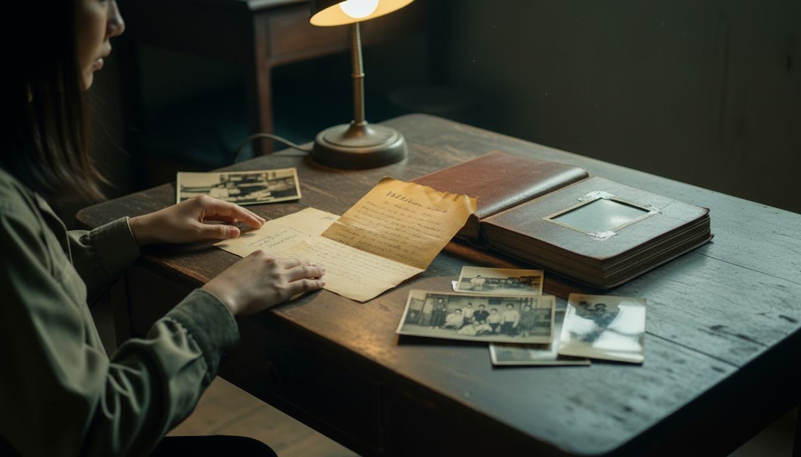
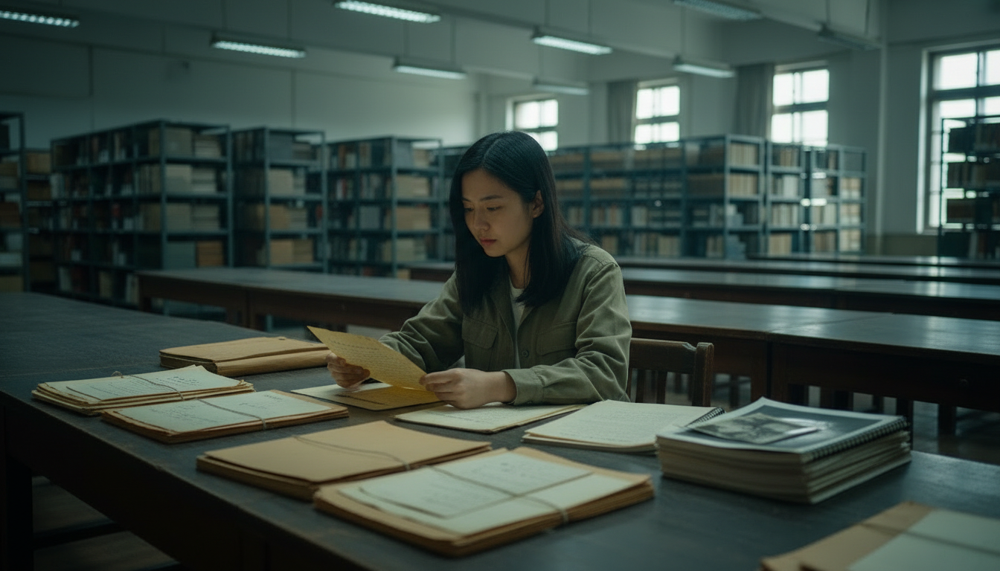
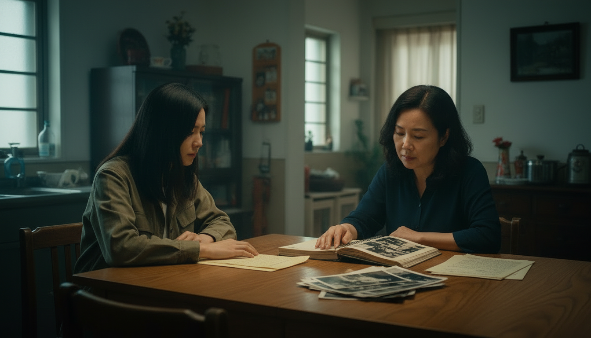
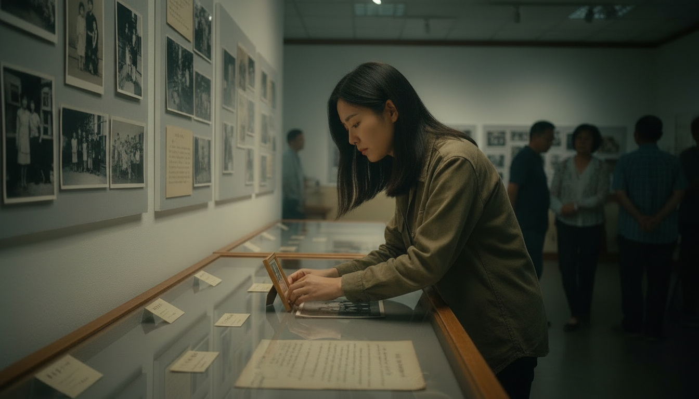
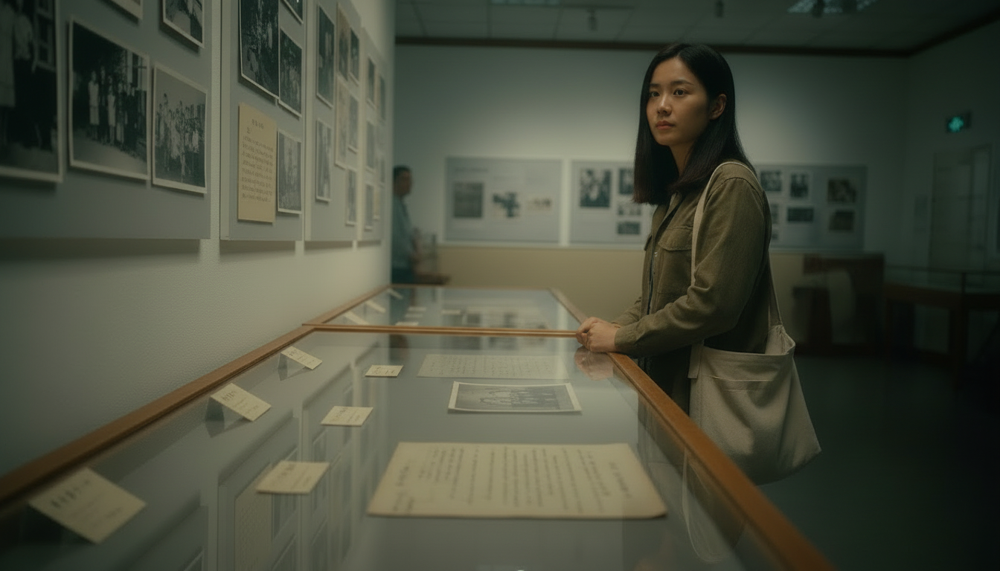

FIG. 01 — THE UNSENT LETTER
CHAPTER 01 / 發現
抽屜裡的信
外婆過世後，予安回到屏東老家整理遺物。大部分的東西都很普通： 舊衣服、藥袋、合照，以及一本寫滿日期的記事本。 直到她打開房間角落那個上鎖的木抽屜，才發現裡面藏著一封信。
信紙已經泛黃，日期停在 1956 年。信封上寫著外公的名字， 但沒有郵戳，也沒有寄件地址。予安從小就很少聽見家人提起外公， 只知道他曾經離開家一段很長的時間。
她原本以為這只是一般的私人信件。 但當她看見信紙上第一行字時，卻開始懷疑： 這個家究竟隱瞞了什麼？

FIG. 02 — A NAME LEFT OUT
CHAPTER 02 / 疑問
被刪去的名字
信裡沒有完整交代事情的經過，只留下幾句讓予安難以忽略的話。 她反覆讀著其中一段，第一次意識到，外公的離開可能不單純是普通的家庭變故。
「如果有一天，你能把事情說清楚，
請不要讓孩子以為他做錯了什麼。」
她翻開相簿，發現某幾頁的照片不見了。 當她拿著信詢問母親，母親卻只看了一眼，就把信放回桌上。
「事情都過去了，不要再問了。」
母親沒有解釋。這句話讓予安更加困惑：如果事情早已過去， 為什麼現在仍然沒有人願意談起？

FIG. 03 — THE ARCHIVE
CHAPTER 03 / 查證
檔案室裡的答案
予安決定從信上的日期開始查起。她搜尋歷史資料， 也前往檔案室尋找可能與外公有關的紀錄。 幾次查詢之後，她終於找到一份與線索相符的舊案資料。
文件顯示，外公曾在威權時期因政治案件遭到拘押。 過去那些含糊不清的說法，第一次有了可以核對的歷史背景。 予安也開始理解，為什麼家人談起這段往事時總是格外謹慎。
然而，檔案記錄的是日期、程序與官方認定的案情， 並沒有說明外公當時經歷了什麼，也沒有解釋外婆為何寫了那封信， 最後又為什麼沒有寄出。
她找到了一部分答案，卻也發現，歷史文件無法替每一個人完整說出他的故事。

FIG. 04 — WHAT THE FAMILY NEVER SAID
CHAPTER 04 / 對話
終於說出口的事
予安把找到的資料帶回家，放在母親面前。 她問母親： 「媽媽，妳小時候，有人跟妳解釋過外公的事嗎？」
母親沉默了一會兒，才慢慢說起自己的童年。 那時家裡很少公開談論外公的遭遇，大人不願提起， 孩子也不知道能向誰詢問。久而久之，這件事成了家裡的禁忌話題。
母親記得的片段並不完整。有些事情是她親眼見過的， 有些則是多年後從親戚口中聽來的。她無法回答予安所有問題， 但她終於承認，自己也曾經想知道真相，只是不知道該怎麼開口。
有時候，恐懼會離開事件發生的現場，卻繼續留在一個普通家庭的日常裡。

FIG. 05 — MAKING HISTORY VISIBLE
CHAPTER 05 / 分享
讓故事被看見
予安開始整理手上的資料：外婆留下的信、家族相簿、歷史文件， 以及母親願意分享的童年記憶。她希望把這些線索整理成一份小型的紀錄， 也參與地方展覽，讓更多人看見私人記憶與公共歷史之間的關係。
她也逐漸理解，展出這段歷史並不是為了替家人下定論， 而是為了讓過去不再只能留在某個人的抽屜裡， 讓那些曾經被忽略的故事有機會被看見、被討論。

FIG. 06 — THE LAST PAGE
CHAPTER 06 / 留下
信的最後一頁
展覽開放的那天，予安把外婆的信放在展示桌中央， 旁邊並列著歷史文件、家族照片，以及她整理的文字說明。 她沒有替這段往事寫下一個簡單的結論。
她知道，自己無法只憑一封信，就還原外公經歷的一切； 也不能把母親的記憶當成所有問題的唯一答案。 但她至少能讓觀眾知道，這些資料從何而來， 哪些事情已有紀錄，哪些仍需要繼續查證。
離開展覽時，予安再次想起那封沒有寄出的信。 它沒有讓所有疑問消失，卻讓一段原本無法被談論的歷史， 終於有了被理解與追問的可能。
對她而言，轉型正義不只是回頭檢視過去發生了什麼， 也包括保存證據、聆聽受影響者的經驗， 並讓後來的人不必再透過沉默去猜測歷史。